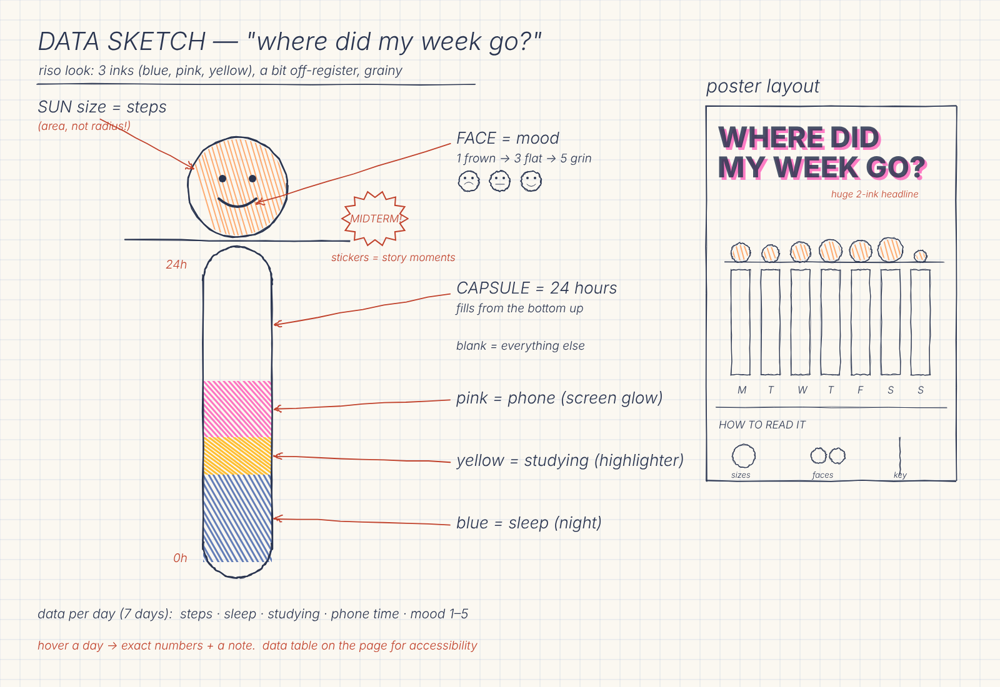

The week
Mon–Wed: small suns, fat yellow study bands. Wednesday is the night before my stats midterm, with the most studying of the week and a frown.
Thu–Sat: the midterm is done. The suns get huge, the yellow almost disappears, and Saturday (gameday) gets the biggest sun and the biggest grin.
Sun: the smallest sun, the most pink (7.4 h on my phone), and the frown is back.
The mapping
- 1. Sun size = steps walked
- ☺2. Face = mood, 1 (rough) to 5 (great)
- 3. Capsule = 24 hours, filling from the bottom:
- sleep
- studying
- on my phone
- everything else
Sketch first
I planned the concept and layout on paper before coding.

The data
Stored in data.json and loaded with await loadJSON('data.json') inside async function setup().
| day | steps | sleep h | study h | phone h | mood | note |
|---|